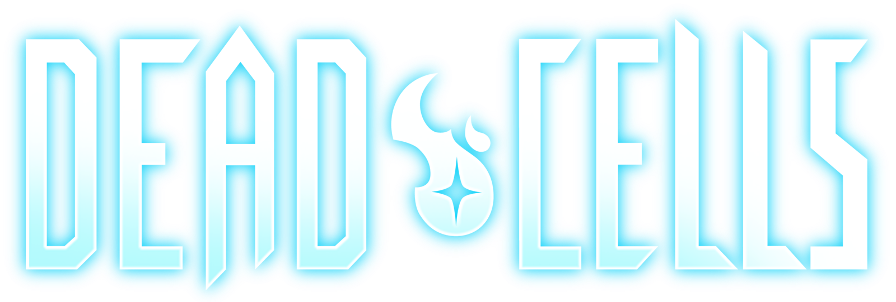
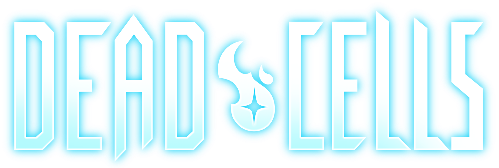
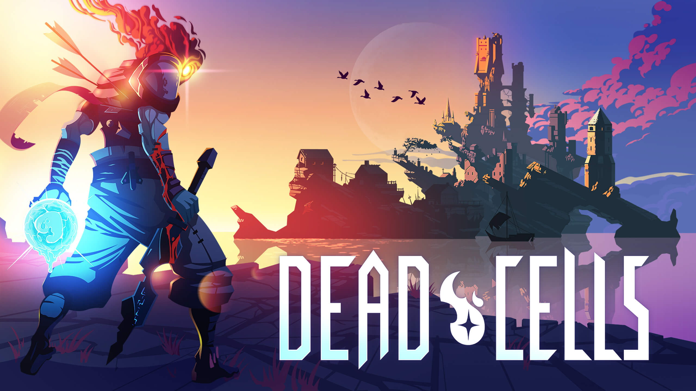

Dead Cells
é um jogo eletrônico roguelike-metroidvania
desenvolvido e publicado pela Motion Twin.
No game, o jogador vivencia o papel de um homúnculo que
assume o controle de um cadáver em uma masmorra, na qual
ele deve lutar para sair.Seu objetivo principal é percorrer
diversos lugares da ilha até chegar ao "Castelo do Pico Alto"
onde ele irá descobrir os grandes mistérios sobre
"A Peste" que assola a região.